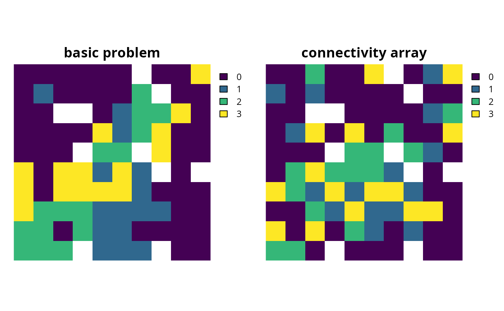

Add penalties to a conservation planning problem to favor
solutions that select planning units with high connectivity between them.
# S4 method for ConservationProblem,ANY,ANY,matrix add_connectivity_penalties(x, penalty, zones, data) # S4 method for ConservationProblem,ANY,ANY,Matrix add_connectivity_penalties(x, penalty, zones, data) # S4 method for ConservationProblem,ANY,ANY,dgCMatrix add_connectivity_penalties(x, penalty, zones, data) # S4 method for ConservationProblem,ANY,ANY,data.frame add_connectivity_penalties(x, penalty, zones, data) # S4 method for ConservationProblem,ANY,ANY,array add_connectivity_penalties(x, penalty, zones, data)
Arguments
| x |
|
|---|---|
| penalty |
|
| zones |
|
| data |
|
| ... | not used. |
Value
ConservationProblem-class object with the penalties
added to it.
Details
This function uses connectivity data to penalize solutions that have low connectivity. It can accommodate symmetric and asymmetric relationships between planning units. Although Marxan penalizes connections between planning units with high connectivity values, it is important to note that this function favors connections between planning units with high connectivity values. This function was inspired by Beger et al. (2010).
The argument to data can be specified in several different ways:
matrix,Matrixwhere rows and columns represent different planning units and the value of each cell represents the strength of connectivity between two different planning units. Cells that occur along the matrix diagonal are treated as weights which indicate that planning units are more desirable in the solution. The argument to
zonescan be used to control the strength of connectivity between planning units in different zones. The default argument forzonesis to treat planning units allocated to different zones as having zero connectivity.data.framecontaining the fields (columns)
"id1","id2", and"boundary". Here, each row denotes the connectivity between two planning units following the Marxan format. The data can be used to denote symmetric or asymmetric relationships between planning units. By default, input data is assumed to be symmetric unless asymmetric data is also included (e.g. if data is present for planning units 2 and 3, then the same amount of connectivity is expected for planning units 3 and 2, unless connectivity data is also provided for planning units 3 and 2). If the argument toxcontains multiple zones, then the columns"zone1"and"zone2"can optionally be provided to manually specify the connectivity values between planning units when they are allocated to specific zones. If the columns"zone1"and"zone2"are present, then the argument tozonesmust beNULL.arraycontaining four-dimensions where cell values indicate the strength of connectivity between planning units when they are assigned to specific management zones. The first two dimensions (i.e. rows and columns) indicate the strength of connectivity between different planning units and the second two dimensions indicate the different management zones. Thus the
data[1, 2, 3, 4]indicates the strength of connectivity between planning unit 1 and planning unit 2 when planning unit 1 is assigned to zone 3 and planning unit 2 is assigned to zone 4.
The connectivity penalties are calculated using the following equations.
Let \(I\) represent the set of planning units
(indexed by \(i\) or \(j\)), \(Z\) represent the set
of management zones (indexed by \(z\) or \(y\)), and \(X_{iz}\)
represent the decision variable for planning unit \(i\) for in zone
\(z\) (e.g. with binary
values one indicating if planning unit is allocated or not). Also, let
\(p\) represent the argument to penalty, \(D\) represent the
argument to data, and \(W\) represent the argument
to zones.
If the argument to data is supplied as a matrix or
Matrix object, then the penalties are calculated as:
$$ \sum_{i}^{I} \sum_{j}^{I} \sum_{z}^{Z} \sum_{y}^{Z} (-p \times X_{iz} \times X_{jy} \times D_{ij} \times W_{zy})$$
Otherwise, if the argument to data is supplied as a
data.frame or array object, then the penalties are
calculated as:
$$ \sum_{i}^{I} \sum_{j}^{I} \sum_{z}^{Z} \sum_{y}^{Z} (-p \times X_{iz} \times X_{jy} \times D_{ijzy})$$
Note that when the problem objective is to maximize some measure of benefit and not minimize some measure of cost, the term \(-p\) is replaced with \(p\).
References
Beger M, Linke S, Watts M, Game E, Treml E, Ball I, and Possingham, HP (2010) Incorporating asymmetric connectivity into spatial decision making for conservation, Conservation Letters, 3: 359--368.
See also
Examples
# set seed for reproducibility set.seed(600) # load Matrix package for visualizing matrices require(Matrix)#># load data data(sim_pu_polygons, sim_pu_zones_stack, sim_features, sim_features_zones) # define function to rescale values between zero and one so that we # can compare solutions from different connectivity matrices rescale <- function(x, to = c(0, 1), from = range(x, na.rm = TRUE)) { (x - from[1]) / diff(from) * diff(to) + to[1] } # create basic problem p1 <- problem(sim_pu_polygons, sim_features, "cost") %>% add_min_set_objective() %>% add_relative_targets(0.2) # create a symmetric connectivity matrix where the connectivity between # two planning units corresponds to their shared boundary length b_matrix <- boundary_matrix(sim_pu_polygons) # standardize matrix values to lay between zero and one b_matrix[] <- rescale(b_matrix[]) # visualize connectivity matriximage(b_matrix)# create a symmetric connectivity matrix where the connectivity between # two planning units corresponds to their spatial proximity # i.e. planning units that are further apart share less connectivity centroids <- rgeos::gCentroid(sim_pu_polygons, byid = TRUE) d_matrix <- (1 / (as(dist(centroids@coords), "Matrix") + 1)) # standardize matrix values to lay between zero and one d_matrix[] <- rescale(d_matrix[]) # remove connections between planning units without connectivity to # reduce run-time d_matrix[d_matrix < 0.7] <- 0 # visualize connectivity matriximage(d_matrix)# create a symmetric connectivity matrix where the connectivity # between adjacent two planning units corresponds to their combined # value in a field in the planning unit attribute data # for example, this field could describe the extent of native vegetation in # each planning unit and we could use connectivity penalties to identify # solutions that cluster planning units together that both contain large # amounts of native vegetation c_matrix <- connectivity_matrix(sim_pu_polygons, "cost") # standardize matrix values to lay between zero and one c_matrix[] <- rescale(c_matrix[]) # visualize connectivity matriximage(c_matrix)# create an asymmetric connectivity matrix. Here, connectivity occurs between # adjacent planning units and, due to rivers flowing southwards # through the study area, connectivity from northern planning units to # southern planning units is ten times stronger than the reverse. ac_matrix <- matrix(0, length(sim_pu_polygons), length(sim_pu_polygons)) ac_matrix <- as(ac_matrix, "Matrix") adjacent_units <- rgeos::gIntersects(sim_pu_polygons, byid = TRUE) for (i in seq_len(length(sim_pu_polygons))) { for (j in seq_len(length(sim_pu_polygons))) { # find if planning units are adjacent if (adjacent_units[i, j]) { # find if planning units lay north and south of each other # i.e. they have the same x-coordinate if (centroids@coords[i, 1] == centroids@coords[j, 1]) { if (centroids@coords[i, 2] > centroids@coords[j, 2]) { # if i is north of j add 10 units of connectivity ac_matrix[i, j] <- ac_matrix[i, j] + 10 } else if (centroids@coords[i, 2] < centroids@coords[j, 2]) { # if i is south of j add 1 unit of connectivity ac_matrix[i, j] <- ac_matrix[i, j] + 1 } } } } } # standardize matrix values to lay between zero and one ac_matrix[] <- rescale(ac_matrix[]) # visualize asymmetric connectivity matriximage(ac_matrix)# create penalties penalties <- c(10, 25) # create problems using the different connectivity matrices and penalties p2 <- list(p1, p1 %>% add_connectivity_penalties(penalties[1], data = b_matrix), p1 %>% add_connectivity_penalties(penalties[2], data = b_matrix), p1 %>% add_connectivity_penalties(penalties[1], data = d_matrix), p1 %>% add_connectivity_penalties(penalties[2], data = d_matrix), p1 %>% add_connectivity_penalties(penalties[1], data = c_matrix), p1 %>% add_connectivity_penalties(penalties[2], data = c_matrix), p1 %>% add_connectivity_penalties(penalties[1], data = ac_matrix), p1 %>% add_connectivity_penalties(penalties[2], data = ac_matrix)) # assign names to the problems names(p2) <- c("basic problem", paste0("b_matrix (", penalties,")"), paste0("d_matrix (", penalties,")"), paste0("c_matrix (", penalties,")"), paste0("ac_matrix (", penalties,")"))#> Optimize a model with 5 rows, 90 columns and 450 nonzeros #> Variable types: 0 continuous, 90 integer (90 binary) #> Coefficient statistics: #> Matrix range [2e-01, 9e-01] #> Objective range [2e+02, 2e+02] #> Bounds range [1e+00, 1e+00] #> RHS range [6e+00, 1e+01] #> Found heuristic solution: objective 3934.6218396 #> Presolve time: 0.00s #> Presolved: 5 rows, 90 columns, 450 nonzeros #> Variable types: 0 continuous, 90 integer (90 binary) #> Presolved: 5 rows, 90 columns, 450 nonzeros #> #> #> Root relaxation: objective 3.496032e+03, 16 iterations, 0.00 seconds #> #> Nodes | Current Node | Objective Bounds | Work #> Expl Unexpl | Obj Depth IntInf | Incumbent BestBd Gap | It/Node Time #> #> 0 0 3496.03193 0 4 3934.62184 3496.03193 11.1% - 0s #> H 0 0 3585.9601335 3496.03193 2.51% - 0s #> #> Explored 1 nodes (16 simplex iterations) in 0.00 seconds #> Thread count was 1 (of 4 available processors) #> #> Solution count 2: 3585.96 3934.62 #> #> Optimal solution found (tolerance 1.00e-01) #> Best objective 3.585960133519e+03, best bound 3.496031931890e+03, gap 2.5078% #> Optimize a model with 581 rows, 378 columns and 1602 nonzeros #> Variable types: 0 continuous, 378 integer (378 binary) #> Coefficient statistics: #> Matrix range [2e-01, 1e+00] #> Objective range [3e+00, 2e+02] #> Bounds range [1e+00, 1e+00] #> RHS range [6e+00, 1e+01] #> Found heuristic solution: objective 17287.196992 #> Found heuristic solution: objective 3691.2885062 #> Presolve time: 0.00s #> Presolved: 581 rows, 378 columns, 1602 nonzeros #> Variable types: 0 continuous, 378 integer (378 binary) #> Presolved: 581 rows, 378 columns, 1602 nonzeros #> #> #> Root relaxation: objective 3.307193e+03, 159 iterations, 0.00 seconds #> #> Nodes | Current Node | Objective Bounds | Work #> Expl Unexpl | Obj Depth IntInf | Incumbent BestBd Gap | It/Node Time #> #> 0 0 3307.19310 0 86 3691.28851 3307.19310 10.4% - 0s #> H 0 0 3433.8940898 3307.19310 3.69% - 0s #> #> Explored 1 nodes (159 simplex iterations) in 0.01 seconds #> Thread count was 1 (of 4 available processors) #> #> Solution count 3: 3433.89 3691.29 17287.2 #> #> Optimal solution found (tolerance 1.00e-01) #> Best objective 3.433894089811e+03, best bound 3.307193102718e+03, gap 3.6897% #> Optimize a model with 581 rows, 378 columns and 1602 nonzeros #> Variable types: 0 continuous, 378 integer (378 binary) #> Coefficient statistics: #> Matrix range [2e-01, 1e+00] #> Objective range [8e+00, 2e+02] #> Bounds range [1e+00, 1e+00] #> RHS range [6e+00, 1e+01] #> Found heuristic solution: objective 15487.196992 #> Found heuristic solution: objective 3326.2885062 #> Presolve time: 0.00s #> Presolved: 581 rows, 378 columns, 1602 nonzeros #> Variable types: 0 continuous, 378 integer (378 binary) #> Presolved: 581 rows, 378 columns, 1602 nonzeros #> #> #> Root relaxation: objective 3.012030e+03, 174 iterations, 0.00 seconds #> #> Nodes | Current Node | Objective Bounds | Work #> Expl Unexpl | Obj Depth IntInf | Incumbent BestBd Gap | It/Node Time #> #> 0 0 3012.03046 0 138 3326.28851 3012.03046 9.45% - 0s #> #> Explored 1 nodes (174 simplex iterations) in 0.01 seconds #> Thread count was 1 (of 4 available processors) #> #> Solution count 2: 3326.29 15487.2 #> #> Optimal solution found (tolerance 1.00e-01) #> Best objective 3.326288506226e+03, best bound 3.012030457072e+03, gap 9.4477% #> Optimize a model with 1601 rows, 888 columns and 3642 nonzeros #> Variable types: 0 continuous, 888 integer (888 binary) #> Coefficient statistics: #> Matrix range [2e-01, 1e+00] #> Objective range [7e+00, 2e+02] #> Bounds range [1e+00, 1e+00] #> RHS range [6e+00, 1e+01] #> Found heuristic solution: objective 11397.038660 #> Found heuristic solution: objective 2915.9453686 #> Presolve time: 0.01s #> Presolved: 1601 rows, 888 columns, 3642 nonzeros #> Variable types: 0 continuous, 888 integer (888 binary) #> Presolved: 1601 rows, 888 columns, 3642 nonzeros #> #> #> Root relaxation: objective 2.277325e+03, 601 iterations, 0.03 seconds #> #> Nodes | Current Node | Objective Bounds | Work #> Expl Unexpl | Obj Depth IntInf | Incumbent BestBd Gap | It/Node Time #> #> 0 0 2277.32517 0 877 2915.94537 2277.32517 21.9% - 0s #> 0 0 2282.91603 0 874 2915.94537 2282.91603 21.7% - 3s #> 0 0 2288.19139 0 871 2915.94537 2288.19139 21.5% - 3s #> 0 0 2288.19139 0 483 2915.94537 2288.19139 21.5% - 3s #> 0 0 2295.81836 0 478 2915.94537 2295.81836 21.3% - 3s #> 0 0 2299.18104 0 478 2915.94537 2299.18104 21.2% - 3s #> 0 0 2310.18554 0 450 2915.94537 2310.18554 20.8% - 3s #> 0 0 2314.83207 0 473 2915.94537 2314.83207 20.6% - 3s #> 0 0 2316.71918 0 467 2915.94537 2316.71918 20.5% - 3s #> 0 0 2316.71918 0 467 2915.94537 2316.71918 20.5% - 4s #> H 0 0 2879.5923214 2316.71918 19.5% - 4s #> 0 2 2316.75143 0 467 2879.59232 2316.75143 19.5% - 4s #> H 53 53 2669.2652017 2367.46532 11.3% 45.8 4s #> H 273 209 2665.1537029 2389.53644 10.3% 56.5 4s #> #> Cutting planes: #> Gomory: 6 #> #> Explored 330 nodes (18882 simplex iterations) in 4.96 seconds #> Thread count was 1 (of 4 available processors) #> #> Solution count 5: 2665.15 2669.27 2879.59 ... 11397 #> #> Optimal solution found (tolerance 1.00e-01) #> Best objective 2.665153702866e+03, best bound 2.411089064269e+03, gap 9.5328% #> Optimize a model with 1601 rows, 888 columns and 3642 nonzeros #> Variable types: 0 continuous, 888 integer (888 binary) #> Coefficient statistics: #> Matrix range [2e-01, 1e+00] #> Objective range [2e+01, 2e+02] #> Bounds range [1e+00, 1e+00] #> RHS range [6e+00, 1e+01] #> Found heuristic solution: objective 761.8011610 #> Presolve time: 0.01s #> Presolved: 1601 rows, 888 columns, 3642 nonzeros #> Variable types: 0 continuous, 888 integer (888 binary) #> Presolved: 1601 rows, 888 columns, 3642 nonzeros #> #> #> Root relaxation: objective 1.267850e+02, 243 iterations, 0.01 seconds #> #> Nodes | Current Node | Objective Bounds | Work #> Expl Unexpl | Obj Depth IntInf | Incumbent BestBd Gap | It/Node Time #> #> 0 0 126.78496 0 695 761.80116 126.78496 83.4% - 0s #> H 0 0 468.0158310 126.78496 72.9% - 0s #> 0 0 139.58775 0 693 468.01583 139.58775 70.2% - 2s #> 0 0 148.83710 0 691 468.01583 148.83710 68.2% - 2s #> 0 0 148.83710 0 382 468.01583 148.83710 68.2% - 2s #> 0 0 161.29257 0 380 468.01583 161.29257 65.5% - 3s #> 0 0 170.44305 0 348 468.01583 170.44305 63.6% - 3s #> 0 0 182.28500 0 352 468.01583 182.28500 61.1% - 3s #> H 0 0 454.2214760 182.28500 59.9% - 3s #> 0 0 194.23505 0 378 454.22148 194.23505 57.2% - 3s #> 0 0 194.23505 0 378 454.22148 194.23505 57.2% - 3s #> 0 2 195.12431 0 378 454.22148 195.12431 57.0% - 3s #> H 1 1 423.4053090 195.12431 53.9% 0.0 3s #> * 49 3 2 421.3259805 329.15212 21.9% 41.5 3s #> #> Cutting planes: #> Gomory: 5 #> #> Explored 52 nodes (2800 simplex iterations) in 3.63 seconds #> Thread count was 1 (of 4 available processors) #> #> Solution count 5: 421.326 423.405 454.221 ... 761.801 #> #> Optimal solution found (tolerance 1.00e-01) #> Best objective 4.213259804528e+02, best bound 3.823629791434e+02, gap 9.2477% #> Optimize a model with 581 rows, 378 columns and 1602 nonzeros #> Variable types: 0 continuous, 378 integer (378 binary) #> Coefficient statistics: #> Matrix range [2e-01, 1e+00] #> Objective range [9e+00, 2e+02] #> Bounds range [1e+00, 1e+00] #> RHS range [6e+00, 1e+01] #> Found heuristic solution: objective 15721.108025 #> Found heuristic solution: objective 3513.2283384 #> Presolve time: 0.00s #> Presolved: 581 rows, 378 columns, 1602 nonzeros #> Variable types: 0 continuous, 378 integer (378 binary) #> Presolved: 581 rows, 378 columns, 1602 nonzeros #> #> #> Root relaxation: objective 3.099126e+03, 223 iterations, 0.01 seconds #> #> Nodes | Current Node | Objective Bounds | Work #> Expl Unexpl | Obj Depth IntInf | Incumbent BestBd Gap | It/Node Time #> #> 0 0 3099.12568 0 190 3513.22834 3099.12568 11.8% - 0s #> 0 0 3106.44940 0 164 3513.22834 3106.44940 11.6% - 0s #> H 0 0 3244.5496513 3106.44940 4.26% - 0s #> #> Cutting planes: #> Gomory: 1 #> #> Explored 1 nodes (267 simplex iterations) in 0.04 seconds #> Thread count was 1 (of 4 available processors) #> #> Solution count 3: 3244.55 3513.23 15721.1 #> #> Optimal solution found (tolerance 1.00e-01) #> Best objective 3.244549651264e+03, best bound 3.106449395648e+03, gap 4.2564% #> Optimize a model with 581 rows, 378 columns and 1602 nonzeros #> Variable types: 0 continuous, 378 integer (378 binary) #> Coefficient statistics: #> Matrix range [2e-01, 1e+00] #> Objective range [2e+01, 2e+02] #> Bounds range [1e+00, 1e+00] #> RHS range [6e+00, 1e+01] #> Found heuristic solution: objective 11571.974576 #> Found heuristic solution: objective 2881.1380866 #> Presolve time: 0.01s #> Presolved: 581 rows, 378 columns, 1602 nonzeros #> Variable types: 0 continuous, 378 integer (378 binary) #> Presolved: 581 rows, 378 columns, 1602 nonzeros #> #> #> Root relaxation: objective 2.309063e+03, 214 iterations, 0.01 seconds #> #> Nodes | Current Node | Objective Bounds | Work #> Expl Unexpl | Obj Depth IntInf | Incumbent BestBd Gap | It/Node Time #> #> 0 0 2309.06312 0 362 2881.13809 2309.06312 19.9% - 0s #> 0 0 2328.00732 0 359 2881.13809 2328.00732 19.2% - 0s #> 0 0 2339.73282 0 365 2881.13809 2339.73282 18.8% - 0s #> 0 0 2339.73282 0 224 2881.13809 2339.73282 18.8% - 0s #> 0 0 2346.29691 0 224 2881.13809 2346.29691 18.6% - 0s #> 0 0 2357.20173 0 222 2881.13809 2357.20173 18.2% - 0s #> 0 0 2360.84727 0 226 2881.13809 2360.84727 18.1% - 0s #> 0 0 2376.63837 0 223 2881.13809 2376.63837 17.5% - 0s #> 0 0 2376.63837 0 223 2881.13809 2376.63837 17.5% - 0s #> H 0 0 2633.0995862 2376.63837 9.74% - 0s #> #> Cutting planes: #> Gomory: 4 #> #> Explored 1 nodes (717 simplex iterations) in 0.43 seconds #> Thread count was 1 (of 4 available processors) #> #> Solution count 3: 2633.1 2881.14 11572 #> #> Optimal solution found (tolerance 1.00e-01) #> Best objective 2.633099586223e+03, best bound 2.376638371787e+03, gap 9.7399% #> Optimize a model with 293 rows, 234 columns and 1026 nonzeros #> Variable types: 0 continuous, 234 integer (234 binary) #> Coefficient statistics: #> Matrix range [2e-01, 1e+00] #> Objective range [1e+00, 2e+02] #> Bounds range [1e+00, 1e+00] #> RHS range [6e+00, 1e+01] #> Found heuristic solution: objective 17098.178722 #> Found heuristic solution: objective 3824.6218396 #> Presolve time: 0.00s #> Presolved: 293 rows, 234 columns, 1026 nonzeros #> Variable types: 0 continuous, 234 integer (234 binary) #> Presolved: 293 rows, 234 columns, 1026 nonzeros #> #> #> Root relaxation: objective 3.385781e+03, 49 iterations, 0.00 seconds #> #> Nodes | Current Node | Objective Bounds | Work #> Expl Unexpl | Obj Depth IntInf | Incumbent BestBd Gap | It/Node Time #> #> 0 0 3385.78126 0 24 3824.62184 3385.78126 11.5% - 0s #> H 0 0 3506.9306268 3385.78126 3.45% - 0s #> #> Explored 1 nodes (49 simplex iterations) in 0.01 seconds #> Thread count was 1 (of 4 available processors) #> #> Solution count 3: 3506.93 3824.62 17098.2 #> #> Optimal solution found (tolerance 1.00e-01) #> Best objective 3.506930626812e+03, best bound 3.385781260518e+03, gap 3.4546% #> Optimize a model with 293 rows, 234 columns and 1026 nonzeros #> Variable types: 0 continuous, 234 integer (234 binary) #> Coefficient statistics: #> Matrix range [2e-01, 1e+00] #> Objective range [2e+00, 2e+02] #> Bounds range [1e+00, 1e+00] #> RHS range [6e+00, 1e+01] #> Found heuristic solution: objective 15910.178722 #> Found heuristic solution: objective 3659.6218396 #> Presolve time: 0.00s #> Presolved: 293 rows, 234 columns, 1026 nonzeros #> Variable types: 0 continuous, 234 integer (234 binary) #> Presolved: 293 rows, 234 columns, 1026 nonzeros #> #> #> Root relaxation: objective 3.172486e+03, 93 iterations, 0.00 seconds #> #> Nodes | Current Node | Objective Bounds | Work #> Expl Unexpl | Obj Depth IntInf | Incumbent BestBd Gap | It/Node Time #> #> 0 0 3172.48586 0 64 3659.62184 3172.48586 13.3% - 0s #> H 0 0 3386.1100237 3172.48586 6.31% - 0s #> #> Explored 1 nodes (93 simplex iterations) in 0.01 seconds #> Thread count was 1 (of 4 available processors) #> #> Solution count 3: 3386.11 3659.62 15910.2 #> #> Optimal solution found (tolerance 1.00e-01) #> Best objective 3.386110023737e+03, best bound 3.172485864952e+03, gap 6.3088%# plot solutions par(mfrow = c(3, 3)) for (i in seq_along(s2)) { plot(s2[[i]], main = names(p2)[i], cex = 1.5, col = "white") plot(s2[[i]][s2[[i]]$solution_1 == 1, ], col = "darkgreen", add = TRUE) }# create minimal multi-zone problem and limit solver to one minute # to obtain solutions in a short period of time p3 <- problem(sim_pu_zones_stack, sim_features_zones) %>% add_min_set_objective() %>% add_relative_targets(matrix(0.15, nrow = 5, ncol = 3)) %>% add_binary_decisions() %>% add_default_solver(time_limit = 60) # create matrix showing which planning units are adjacent to other units a_matrix <- connected_matrix(sim_pu_zones_stack) # visualize matriximage(a_matrix)# create a zone matrix where connectivities are only present between # planning units that are allocated to the same zone zm1 <- as(diag(3), "Matrix") # print zone matrix print(zm1)#> [,1] [,2] [,3] #> [1,] 1 . . #> [2,] . 1 . #> [3,] . . 1# create a zone matrix where connectivities are strongest between # planning units allocated to different zones zm2 <- matrix(1, ncol = 3, nrow = 3) diag(zm2) <- 0 zm2 <- as(zm2, "Matrix") # print zone matrix print(zm2)#> 3 x 3 Matrix of class "dsyMatrix" #> [,1] [,2] [,3] #> [1,] 0 1 1 #> [2,] 1 0 1 #> [3,] 1 1 0# create a zone matrix that indicates that connectivities between planning # units assigned to the same zone are much higher than connectivities # assigned to different zones zm3 <- matrix(0.1, ncol = 3, nrow = 3) diag(zm3) <- 1 zm3 <- as(zm3, "Matrix") # print zone matrix print(zm3)#> 3 x 3 Matrix of class "dsyMatrix" #> [,1] [,2] [,3] #> [1,] 1.0 0.1 0.1 #> [2,] 0.1 1.0 0.1 #> [3,] 0.1 0.1 1.0# create a zone matrix that indicates that connectivities between planning # units allocated to zone 1 are very high, connectivities between planning # units allocated to zones 1 and 2 are moderately high, and connectivities # planning units allocated to other zones are low zm4 <- matrix(0.1, ncol = 3, nrow = 3) zm4[1, 1] <- 1 zm4[1, 2] <- 0.5 zm4[2, 1] <- 0.5 zm4 <- as(zm4, "Matrix") # print zone matrix print(zm4)#> 3 x 3 Matrix of class "dsyMatrix" #> [,1] [,2] [,3] #> [1,] 1.0 0.5 0.1 #> [2,] 0.5 0.1 0.1 #> [3,] 0.1 0.1 0.1# create a zone matrix with strong connectivities between planning units # allocated to the same zone, moderate connectivities between planning # unit allocated to zone 1 and zone 2, and negative connectivities between # planning units allocated to zone 3 and the other two zones zm5 <- matrix(-1, ncol = 3, nrow = 3) zm5[1, 2] <- 0.5 zm5[2, 1] <- 0.5 diag(zm5) <- 1 zm5 <- as(zm5, "Matrix") # print zone matrix print(zm5)#> 3 x 3 Matrix of class "dsyMatrix" #> [,1] [,2] [,3] #> [1,] 1.0 0.5 -1 #> [2,] 0.5 1.0 -1 #> [3,] -1.0 -1.0 1# create vector of penalties to use creating problems penalties2 <- c(5, 15) # create multi-zone problems using the adjacent connectivity matrix and # different zone matrices p4 <- list( p3, p3 %>% add_connectivity_penalties(penalties2[1], zm1, a_matrix), p3 %>% add_connectivity_penalties(penalties2[2], zm1, a_matrix), p3 %>% add_connectivity_penalties(penalties2[1], zm2, a_matrix), p3 %>% add_connectivity_penalties(penalties2[2], zm2, a_matrix), p3 %>% add_connectivity_penalties(penalties2[1], zm3, a_matrix), p3 %>% add_connectivity_penalties(penalties2[2], zm3, a_matrix), p3 %>% add_connectivity_penalties(penalties2[1], zm4, a_matrix), p3 %>% add_connectivity_penalties(penalties2[2], zm4, a_matrix), p3 %>% add_connectivity_penalties(penalties2[1], zm5, a_matrix), p3 %>% add_connectivity_penalties(penalties2[2], zm5, a_matrix)) # assign names to the problems names(p4) <- c("basic problem", paste0("zm", rep(seq_len(5), each = 2), " (", rep(penalties2, 2), ")"))#> Optimize a model with 105 rows, 270 columns and 1620 nonzeros #> Variable types: 0 continuous, 270 integer (270 binary) #> Coefficient statistics: #> Matrix range [2e-01, 1e+00] #> Objective range [2e+02, 2e+02] #> Bounds range [1e+00, 1e+00] #> RHS range [1e+00, 1e+01] #> Found heuristic solution: objective 10275.924144 #> Presolve time: 0.00s #> Presolved: 105 rows, 270 columns, 1620 nonzeros #> Variable types: 0 continuous, 270 integer (270 binary) #> Presolved: 105 rows, 270 columns, 1620 nonzeros #> #> #> Root relaxation: objective 8.943504e+03, 123 iterations, 0.00 seconds #> #> Nodes | Current Node | Objective Bounds | Work #> Expl Unexpl | Obj Depth IntInf | Incumbent BestBd Gap | It/Node Time #> #> 0 0 8943.50352 0 15 10275.9241 8943.50352 13.0% - 0s #> H 0 0 9111.3117236 8943.50352 1.84% - 0s #> #> Explored 1 nodes (123 simplex iterations) in 0.01 seconds #> Thread count was 1 (of 4 available processors) #> #> Solution count 2: 9111.31 10275.9 #> #> Optimal solution found (tolerance 1.00e-01) #> Best objective 9.111311723633e+03, best bound 8.943503517801e+03, gap 1.8418% #> Optimize a model with 1845 rows, 1140 columns and 5100 nonzeros #> Variable types: 0 continuous, 1140 integer (1140 binary) #> Coefficient statistics: #> Matrix range [2e-01, 1e+00] #> Objective range [5e+00, 2e+02] #> Bounds range [1e+00, 1e+00] #> RHS range [1e+00, 1e+01] #> Found heuristic solution: objective 10075.924144 #> Presolve time: 0.02s #> Presolved: 1845 rows, 1140 columns, 5100 nonzeros #> Variable types: 0 continuous, 1140 integer (1140 binary) #> Presolved: 1845 rows, 1140 columns, 5100 nonzeros #> #> #> Root relaxation: objective 8.367447e+03, 811 iterations, 0.04 seconds #> #> Nodes | Current Node | Objective Bounds | Work #> Expl Unexpl | Obj Depth IntInf | Incumbent BestBd Gap | It/Node Time #> #> 0 0 8367.44688 0 465 10075.9241 8367.44688 17.0% - 0s #> H 0 0 9108.8765843 8367.44688 8.14% - 0s #> #> Explored 1 nodes (811 simplex iterations) in 0.07 seconds #> Thread count was 1 (of 4 available processors) #> #> Solution count 2: 9108.88 10075.9 #> #> Optimal solution found (tolerance 1.00e-01) #> Best objective 9.108876584257e+03, best bound 8.367446876836e+03, gap 8.1396% #> Optimize a model with 1845 rows, 1140 columns and 5100 nonzeros #> Variable types: 0 continuous, 1140 integer (1140 binary) #> Coefficient statistics: #> Matrix range [2e-01, 1e+00] #> Objective range [2e+01, 2e+02] #> Bounds range [1e+00, 1e+00] #> RHS range [1e+00, 1e+01] #> Found heuristic solution: objective 9675.9241439 #> Presolve time: 0.02s #> Presolved: 1845 rows, 1140 columns, 5100 nonzeros #> Variable types: 0 continuous, 1140 integer (1140 binary) #> Presolved: 1845 rows, 1140 columns, 5100 nonzeros #> #> #> Root relaxation: objective 6.996298e+03, 692 iterations, 0.04 seconds #> #> Nodes | Current Node | Objective Bounds | Work #> Expl Unexpl | Obj Depth IntInf | Incumbent BestBd Gap | It/Node Time #> #> 0 0 6996.29839 0 729 9675.92414 6996.29839 27.7% - 0s #> H 0 0 8807.8911596 6996.29839 20.6% - 0s #> H 0 0 8300.3896759 6996.29839 15.7% - 0s #> 0 0 7007.48702 0 740 8300.38968 7007.48702 15.6% - 0s #> 0 0 7012.71987 0 684 8300.38968 7012.71987 15.5% - 0s #> 0 0 7025.27837 0 690 8300.38968 7025.27837 15.4% - 0s #> 0 0 7025.27837 0 452 8300.38968 7025.27837 15.4% - 0s #> H 0 0 8293.4581834 7025.27837 15.3% - 0s #> 0 0 7038.98808 0 449 8293.45818 7038.98808 15.1% - 0s #> 0 0 7047.73583 0 462 8293.45818 7047.73583 15.0% - 0s #> 0 0 7050.56904 0 455 8293.45818 7050.56904 15.0% - 0s #> 0 0 7062.50531 0 473 8293.45818 7062.50531 14.8% - 0s #> H 0 0 8026.6363727 7062.50531 12.0% - 0s #> 0 0 7063.36493 0 483 8026.63637 7063.36493 12.0% - 0s #> 0 0 7063.36493 0 483 8026.63637 7063.36493 12.0% - 0s #> H 0 0 7719.1380957 7063.36493 8.50% - 0s #> #> Cutting planes: #> Gomory: 9 #> #> Explored 1 nodes (1944 simplex iterations) in 0.81 seconds #> Thread count was 1 (of 4 available processors) #> #> Solution count 6: 7719.14 8026.64 8293.46 ... 9675.92 #> #> Optimal solution found (tolerance 1.00e-01) #> Best objective 7.719138095745e+03, best bound 7.063364932526e+03, gap 8.4954% #> Optimize a model with 3585 rows, 2010 columns and 8580 nonzeros #> Variable types: 0 continuous, 2010 integer (2010 binary) #> Coefficient statistics: #> Matrix range [2e-01, 1e+00] #> Objective range [5e+00, 2e+02] #> Bounds range [1e+00, 1e+00] #> RHS range [1e+00, 1e+01] #> Found heuristic solution: objective 9985.9241439 #> Presolve time: 0.05s #> Presolved: 3585 rows, 2010 columns, 12060 nonzeros #> Variable types: 0 continuous, 2010 integer (2010 binary) #> Presolve removed 870 rows and 0 columns #> Presolved: 2715 rows, 2010 columns, 9450 nonzeros #> #> #> Root relaxation: objective 8.346175e+03, 2630 iterations, 0.16 seconds #> #> Nodes | Current Node | Objective Bounds | Work #> Expl Unexpl | Obj Depth IntInf | Incumbent BestBd Gap | It/Node Time #> #> 0 0 8346.17500 0 329 9985.92414 8346.17500 16.4% - 0s #> H 0 0 8807.8710351 8346.17500 5.24% - 0s #> #> Explored 1 nodes (2996 simplex iterations) in 0.25 seconds #> Thread count was 1 (of 4 available processors) #> #> Solution count 2: 8807.87 9985.92 #> #> Optimal solution found (tolerance 1.00e-01) #> Best objective 8.807871035125e+03, best bound 8.346175000834e+03, gap 5.2419% #> Optimize a model with 3585 rows, 2010 columns and 8580 nonzeros #> Variable types: 0 continuous, 2010 integer (2010 binary) #> Coefficient statistics: #> Matrix range [2e-01, 1e+00] #> Objective range [2e+01, 2e+02] #> Bounds range [1e+00, 1e+00] #> RHS range [1e+00, 1e+01] #> Found heuristic solution: objective 9405.9241439 #> Presolve time: 0.06s #> Presolved: 3585 rows, 2010 columns, 12060 nonzeros #> Variable types: 0 continuous, 2010 integer (2010 binary) #> Presolve removed 870 rows and 0 columns #> Presolved: 2715 rows, 2010 columns, 9450 nonzeros #> #> #> Root relaxation: objective 6.957796e+03, 2822 iterations, 0.18 seconds #> #> Nodes | Current Node | Objective Bounds | Work #> Expl Unexpl | Obj Depth IntInf | Incumbent BestBd Gap | It/Node Time #> #> 0 0 6957.79614 0 362 9405.92414 6957.79614 26.0% - 0s #> H 0 0 7880.3220201 6957.79614 11.7% - 0s #> H 0 0 7585.3205877 6957.79614 8.27% - 0s #> #> Explored 1 nodes (3247 simplex iterations) in 0.33 seconds #> Thread count was 1 (of 4 available processors) #> #> Solution count 3: 7585.32 7880.32 9405.92 #> #> Optimal solution found (tolerance 1.00e-01) #> Best objective 7.585320587699e+03, best bound 6.957796139168e+03, gap 8.2729% #> Optimize a model with 5325 rows, 2880 columns and 12060 nonzeros #> Variable types: 0 continuous, 2880 integer (2880 binary) #> Coefficient statistics: #> Matrix range [2e-01, 1e+00] #> Objective range [5e-01, 2e+02] #> Bounds range [1e+00, 1e+00] #> RHS range [1e+00, 1e+01] #> Found heuristic solution: objective 10046.924144 #> Presolve time: 0.11s #> Presolved: 5325 rows, 2880 columns, 17280 nonzeros #> Variable types: 0 continuous, 2880 integer (2880 binary) #> Presolve removed 870 rows and 0 columns #> Presolved: 4455 rows, 2880 columns, 14670 nonzeros #> #> #> Root relaxation: objective 8.343967e+03, 2550 iterations, 0.21 seconds #> #> Nodes | Current Node | Objective Bounds | Work #> Expl Unexpl | Obj Depth IntInf | Incumbent BestBd Gap | It/Node Time #> #> 0 0 8343.96746 0 835 10046.9241 8343.96746 17.0% - 0s #> H 0 0 9212.6916242 8343.96746 9.43% - 0s #> #> Explored 1 nodes (2792 simplex iterations) in 0.38 seconds #> Thread count was 1 (of 4 available processors) #> #> Solution count 2: 9212.69 10046.9 #> #> Optimal solution found (tolerance 1.00e-01) #> Best objective 9.212691624211e+03, best bound 8.343967460484e+03, gap 9.4296% #> Optimize a model with 5325 rows, 2880 columns and 12060 nonzeros #> Variable types: 0 continuous, 2880 integer (2880 binary) #> Coefficient statistics: #> Matrix range [2e-01, 1e+00] #> Objective range [2e+00, 2e+02] #> Bounds range [1e+00, 1e+00] #> RHS range [1e+00, 1e+01] #> Found heuristic solution: objective 9588.9241439 #> Presolve time: 0.11s #> Presolved: 5325 rows, 2880 columns, 17280 nonzeros #> Variable types: 0 continuous, 2880 integer (2880 binary) #> Presolve removed 870 rows and 0 columns #> Presolved: 4455 rows, 2880 columns, 14670 nonzeros #> #> #> Root relaxation: objective 6.879922e+03, 3019 iterations, 0.30 seconds #> #> Nodes | Current Node | Objective Bounds | Work #> Expl Unexpl | Obj Depth IntInf | Incumbent BestBd Gap | It/Node Time #> #> 0 0 6879.92223 0 1025 9588.92414 6879.92223 28.3% - 0s #> H 0 0 8207.6583757 6879.92223 16.2% - 0s #> 0 0 6886.40574 0 1017 8207.65838 6886.40574 16.1% - 0s #> 0 0 6889.44311 0 1014 8207.65838 6889.44311 16.1% - 0s #> 0 0 6897.13414 0 1048 8207.65838 6897.13414 16.0% - 1s #> 0 0 6903.32118 0 1010 8207.65838 6903.32118 15.9% - 1s #> 0 0 6903.36701 0 1010 8207.65838 6903.36701 15.9% - 1s #> 0 0 6904.78908 0 1049 8207.65838 6904.78908 15.9% - 1s #> 0 0 6907.09275 0 1063 8207.65838 6907.09275 15.8% - 1s #> 0 0 6910.94923 0 1111 8207.65838 6910.94923 15.8% - 1s #> 0 0 6912.92708 0 1108 8207.65838 6912.92708 15.8% - 1s #> 0 0 6913.91403 0 1107 8207.65838 6913.91403 15.8% - 1s #> 0 0 6916.42638 0 1101 8207.65838 6916.42638 15.7% - 1s #> 0 0 6916.91762 0 1100 8207.65838 6916.91762 15.7% - 2s #> 0 0 6917.38884 0 1100 8207.65838 6917.38884 15.7% - 2s #> 0 0 6918.88208 0 1096 8207.65838 6918.88208 15.7% - 2s #> 0 0 6919.15347 0 1020 8207.65838 6919.15347 15.7% - 2s #> 0 0 6919.64373 0 1019 8207.65838 6919.64373 15.7% - 2s #> 0 0 6920.13400 0 1018 8207.65838 6920.13400 15.7% - 2s #> 0 0 6920.53268 0 1010 8207.65838 6920.53268 15.7% - 2s #> 0 0 6921.31340 0 1011 8207.65838 6921.31340 15.7% - 3s #> 0 0 6921.56168 0 1047 8207.65838 6921.56168 15.7% - 3s #> 0 0 6922.06417 0 1047 8207.65838 6922.06417 15.7% - 3s #> 0 0 6922.56354 0 1046 8207.65838 6922.56354 15.7% - 3s #> 0 0 6923.05570 0 1033 8207.65838 6923.05570 15.7% - 3s #> 0 0 6923.54288 0 1034 8207.65838 6923.54288 15.6% - 3s #> 0 0 6924.02554 0 1041 8207.65838 6924.02554 15.6% - 3s #> 0 0 6924.44575 0 1054 8207.65838 6924.44575 15.6% - 4s #> 0 0 6924.92491 0 1046 8207.65838 6924.92491 15.6% - 4s #> 0 0 6925.75149 0 1048 8207.65838 6925.75149 15.6% - 4s #> 0 0 6927.32079 0 1041 8207.65838 6927.32079 15.6% - 4s #> 0 0 6929.26300 0 1032 8207.65838 6929.26300 15.6% - 4s #> 0 0 6929.65907 0 1036 8207.65838 6929.65907 15.6% - 4s #> 0 0 6931.25127 0 1029 8207.65838 6931.25127 15.6% - 5s #> 0 0 6932.35022 0 1037 8207.65838 6932.35022 15.5% - 5s #> 0 0 6933.82641 0 1017 8207.65838 6933.82641 15.5% - 5s #> 0 0 6934.42565 0 1041 8207.65838 6934.42565 15.5% - 5s #> 0 0 6935.17619 0 1042 8207.65838 6935.17619 15.5% - 5s #> 0 0 6935.23706 0 1035 8207.65838 6935.23706 15.5% - 5s #> 0 0 6937.00731 0 1026 8207.65838 6937.00731 15.5% - 6s #> 0 0 6937.04579 0 1021 8207.65838 6937.04579 15.5% - 6s #> 0 0 6937.59042 0 1017 8207.65838 6937.59042 15.5% - 6s #> 0 0 6937.59042 0 1017 8207.65838 6937.59042 15.5% - 6s #> H 0 0 7772.2754813 6937.59042 10.7% - 7s #> H 0 0 7516.9431913 6937.59042 7.71% - 7s #> #> Cutting planes: #> Gomory: 6 #> Zero half: 99 #> #> Explored 1 nodes (5552 simplex iterations) in 7.59 seconds #> Thread count was 1 (of 4 available processors) #> #> Solution count 4: 7516.94 7772.28 8207.66 9588.92 #> #> Optimal solution found (tolerance 1.00e-01) #> Best objective 7.516943191288e+03, best bound 6.937590417979e+03, gap 7.7073% #> Optimize a model with 5325 rows, 2880 columns and 12060 nonzeros #> Variable types: 0 continuous, 2880 integer (2880 binary) #> Coefficient statistics: #> Matrix range [2e-01, 1e+00] #> Objective range [5e-01, 2e+02] #> Bounds range [1e+00, 1e+00] #> RHS range [1e+00, 1e+01] #> Found heuristic solution: objective 10118.924144 #> Presolve time: 0.12s #> Presolved: 5325 rows, 2880 columns, 17280 nonzeros #> Variable types: 0 continuous, 2880 integer (2880 binary) #> Presolve removed 870 rows and 0 columns #> Presolved: 4455 rows, 2880 columns, 14670 nonzeros #> #> #> Root relaxation: objective 8.569664e+03, 2956 iterations, 0.26 seconds #> #> Nodes | Current Node | Objective Bounds | Work #> Expl Unexpl | Obj Depth IntInf | Incumbent BestBd Gap | It/Node Time #> #> 0 0 8569.66432 0 836 10118.9241 8569.66432 15.3% - 0s #> H 0 0 9381.9905191 8569.66432 8.66% - 0s #> #> Explored 1 nodes (3447 simplex iterations) in 0.46 seconds #> Thread count was 1 (of 4 available processors) #> #> Solution count 2: 9381.99 10118.9 #> #> Optimal solution found (tolerance 1.00e-01) #> Best objective 9.381990519089e+03, best bound 8.569664324288e+03, gap 8.6584% #> Optimize a model with 5325 rows, 2880 columns and 12060 nonzeros #> Variable types: 0 continuous, 2880 integer (2880 binary) #> Coefficient statistics: #> Matrix range [2e-01, 1e+00] #> Objective range [2e+00, 2e+02] #> Bounds range [1e+00, 1e+00] #> RHS range [1e+00, 1e+01] #> Found heuristic solution: objective 9804.9241439 #> Presolve time: 0.42s #> Presolved: 5325 rows, 2880 columns, 17280 nonzeros #> Variable types: 0 continuous, 2880 integer (2880 binary) #> Presolve removed 870 rows and 0 columns #> Presolved: 4455 rows, 2880 columns, 14670 nonzeros #> #> #> Root relaxation: objective 7.568330e+03, 3103 iterations, 0.63 seconds #> #> Nodes | Current Node | Objective Bounds | Work #> Expl Unexpl | Obj Depth IntInf | Incumbent BestBd Gap | It/Node Time #> #> 0 0 7568.33011 0 1001 9804.92414 7568.33011 22.8% - 1s #> H 0 0 9244.0142847 7568.33011 18.1% - 1s #> H 0 0 8544.1894455 7568.33011 11.4% - 1s #> 0 0 7591.58588 0 1190 8544.18945 7591.58588 11.1% - 1s #> 0 0 7593.30240 0 1193 8544.18945 7593.30240 11.1% - 2s #> 0 0 7614.90367 0 1034 8544.18945 7614.90367 10.9% - 2s #> 0 0 7615.08830 0 1113 8544.18945 7615.08830 10.9% - 2s #> 0 0 7628.17570 0 1141 8544.18945 7628.17570 10.7% - 2s #> 0 0 7628.31022 0 1252 8544.18945 7628.31022 10.7% - 2s #> 0 0 7644.91594 0 1197 8544.18945 7644.91594 10.5% - 3s #> 0 0 7644.91594 0 1200 8544.18945 7644.91594 10.5% - 3s #> 0 0 7655.58429 0 1216 8544.18945 7655.58429 10.4% - 3s #> 0 0 7655.58429 0 1217 8544.18945 7655.58429 10.4% - 3s #> 0 0 7660.00975 0 1226 8544.18945 7660.00975 10.3% - 3s #> 0 0 7660.13285 0 1229 8544.18945 7660.13285 10.3% - 3s #> 0 0 7667.12822 0 1227 8544.18945 7667.12822 10.3% - 3s #> 0 0 7667.81274 0 1237 8544.18945 7667.81274 10.3% - 3s #> 0 0 7667.81274 0 1238 8544.18945 7667.81274 10.3% - 3s #> 0 0 7680.28210 0 1151 8544.18945 7680.28210 10.1% - 3s #> 0 0 7681.03438 0 1195 8544.18945 7681.03438 10.1% - 3s #> 0 0 7681.03438 0 1196 8544.18945 7681.03438 10.1% - 3s #> 0 0 7699.30074 0 1192 8544.18945 7699.30074 9.89% - 3s #> #> Cutting planes: #> Zero half: 141 #> #> Explored 1 nodes (7680 simplex iterations) in 3.99 seconds #> Thread count was 1 (of 4 available processors) #> #> Solution count 3: 8544.19 9244.01 9804.92 #> #> Optimal solution found (tolerance 1.00e-01) #> Best objective 8.544189445540e+03, best bound 7.699300743229e+03, gap 9.8885% #> Optimize a model with 6485 rows, 2880 columns and 15540 nonzeros #> Variable types: 0 continuous, 2880 integer (2880 binary) #> Coefficient statistics: #> Matrix range [2e-01, 1e+00] #> Objective range [2e+00, 2e+02] #> Bounds range [1e+00, 1e+00] #> RHS range [1e+00, 1e+01] #> Found heuristic solution: objective 10084.071885 #> Presolve time: 0.14s #> Presolved: 6485 rows, 2880 columns, 21920 nonzeros #> Variable types: 0 continuous, 2880 integer (2880 binary) #> Presolve removed 870 rows and 0 columns #> Presolved: 5615 rows, 2880 columns, 19310 nonzeros #> #> #> Root relaxation: objective 8.178938e+03, 1514 iterations, 0.20 seconds #> #> Nodes | Current Node | Objective Bounds | Work #> Expl Unexpl | Obj Depth IntInf | Incumbent BestBd Gap | It/Node Time #> #> 0 0 8178.93759 0 960 10084.0719 8178.93759 18.9% - 0s #> H 0 0 9010.5140391 8178.93759 9.23% - 0s #> #> Explored 1 nodes (1514 simplex iterations) in 0.44 seconds #> Thread count was 1 (of 4 available processors) #> #> Solution count 2: 9010.51 10084.1 #> #> Optimal solution found (tolerance 1.00e-01) #> Best objective 9.010514039144e+03, best bound 8.178937587478e+03, gap 9.2290% #> Optimize a model with 6485 rows, 2880 columns and 15540 nonzeros #> Variable types: 0 continuous, 2880 integer (2880 binary) #> Coefficient statistics: #> Matrix range [2e-01, 1e+00] #> Objective range [8e+00, 2e+02] #> Bounds range [1e+00, 1e+00] #> RHS range [1e+00, 1e+01] #> Found heuristic solution: objective 9594.0718845 #> Presolve time: 0.13s #> Presolved: 6485 rows, 2880 columns, 21920 nonzeros #> Variable types: 0 continuous, 2880 integer (2880 binary) #> Presolve removed 870 rows and 0 columns #> Presolved: 5615 rows, 2880 columns, 19310 nonzeros #> #> #> Root relaxation: objective 6.327933e+03, 1328 iterations, 0.32 seconds #> #> Nodes | Current Node | Objective Bounds | Work #> Expl Unexpl | Obj Depth IntInf | Incumbent BestBd Gap | It/Node Time #> #> 0 0 6327.93284 0 1112 9594.07188 6327.93284 34.0% - 0s #> H 0 0 8893.6505996 6327.93284 28.8% - 0s #> H 0 0 8350.6178501 6327.93284 24.2% - 0s #> 0 0 6349.08567 0 1095 8350.61785 6349.08567 24.0% - 0s #> 0 0 6359.02564 0 1102 8350.61785 6359.02564 23.8% - 1s #> 0 0 6361.68522 0 1102 8350.61785 6361.68522 23.8% - 1s #> 0 0 6372.77079 0 1086 8350.61785 6372.77079 23.7% - 1s #> 0 0 6381.34325 0 1084 8350.61785 6381.34325 23.6% - 1s #> 0 0 6382.30710 0 1190 8350.61785 6382.30710 23.6% - 1s #> 0 0 6396.92183 0 1186 8350.61785 6396.92183 23.4% - 1s #> 0 0 6397.77410 0 1187 8350.61785 6397.77410 23.4% - 1s #> 0 0 6401.08834 0 1183 8350.61785 6401.08834 23.3% - 1s #> 0 0 6403.24272 0 1184 8350.61785 6403.24272 23.3% - 2s #> 0 0 6405.93204 0 1181 8350.61785 6405.93204 23.3% - 2s #> 0 0 6408.56885 0 1182 8350.61785 6408.56885 23.3% - 2s #> 0 0 6411.98230 0 1209 8350.61785 6411.98230 23.2% - 2s #> 0 0 6411.98230 0 1210 8350.61785 6411.98230 23.2% - 2s #> 0 0 6413.78362 0 1207 8350.61785 6413.78362 23.2% - 3s #> 0 0 6416.51231 0 1207 8350.61785 6416.51231 23.2% - 3s #> 0 0 6416.51231 0 1206 8350.61785 6416.51231 23.2% - 3s #> 0 0 6418.35022 0 1207 8350.61785 6418.35022 23.1% - 3s #> 0 0 6420.53839 0 1208 8350.61785 6420.53839 23.1% - 4s #> 0 0 6420.62628 0 1208 8350.61785 6420.62628 23.1% - 4s #> H 0 0 8264.6239086 6420.62628 22.3% - 4s #> 0 0 6433.98076 0 1202 8264.62391 6433.98076 22.2% - 4s #> 0 0 6439.39644 0 1198 8264.62391 6439.39644 22.1% - 4s #> 0 0 6445.46192 0 1188 8264.62391 6445.46192 22.0% - 5s #> 0 0 6445.99828 0 1185 8264.62391 6445.99828 22.0% - 5s #> 0 0 6446.01262 0 1185 8264.62391 6446.01262 22.0% - 5s #> 0 0 6446.29655 0 1196 8264.62391 6446.29655 22.0% - 5s #> 0 0 6446.29655 0 1196 8264.62391 6446.29655 22.0% - 9s #> H 0 0 7792.1822762 6446.29655 17.3% - 10s #> H 0 0 7749.6342428 6446.29655 16.8% - 11s #> 0 0 6906.28153 0 837 7749.63424 6906.28153 10.9% - 12s #> H 0 0 7633.8881941 6906.28153 9.53% - 13s #> #> Explored 1 nodes (5858 simplex iterations) in 13.08 seconds #> Thread count was 1 (of 4 available processors) #> #> Solution count 7: 7633.89 7749.63 7792.18 ... 9594.07 #> #> Optimal solution found (tolerance 1.00e-01) #> Best objective 7.633888194093e+03, best bound 6.906281526489e+03, gap 9.5313%s4 <- lapply(s4, category_layer) s4 <- stack(s4) # plot solutions plot(s4, main = names(p4), axes = FALSE, box = FALSE)# create an array to manually specify the connectivities between # each planning unit when they are allocated to each different zone # for real-world problems, these connectivities would be generated using # data - but here these connectivity values are assigned as random # ones or zeros c_array <- array(0, c(rep(ncell(sim_pu_zones_stack[[1]]), 2), 3, 3)) for (z1 in seq_len(3)) for (z2 in seq_len(3)) c_array[, , z1, z2] <- round(runif(ncell(sim_pu_zones_stack[[1]]) ^ 2, 0, 0.505)) # create a problem with the manually specified connectivity array # note that the zones argument is set to NULL because the connectivity # data is an array p5 <- list(p3, p3 %>% add_connectivity_penalties(15, zones = NULL, c_array)) # assign names to the problems names(p5) <- c("basic problem", "connectivity array")#> Optimize a model with 105 rows, 270 columns and 1620 nonzeros #> Variable types: 0 continuous, 270 integer (270 binary) #> Coefficient statistics: #> Matrix range [2e-01, 1e+00] #> Objective range [2e+02, 2e+02] #> Bounds range [1e+00, 1e+00] #> RHS range [1e+00, 1e+01] #> Found heuristic solution: objective 10275.924144 #> Presolve time: 0.00s #> Presolved: 105 rows, 270 columns, 1620 nonzeros #> Variable types: 0 continuous, 270 integer (270 binary) #> Presolved: 105 rows, 270 columns, 1620 nonzeros #> #> #> Root relaxation: objective 8.943504e+03, 123 iterations, 0.00 seconds #> #> Nodes | Current Node | Objective Bounds | Work #> Expl Unexpl | Obj Depth IntInf | Incumbent BestBd Gap | It/Node Time #> #> 0 0 8943.50352 0 15 10275.9241 8943.50352 13.0% - 0s #> H 0 0 9111.3117236 8943.50352 1.84% - 0s #> #> Explored 1 nodes (123 simplex iterations) in 0.01 seconds #> Thread count was 1 (of 4 available processors) #> #> Solution count 2: 9111.31 10275.9 #> #> Optimal solution found (tolerance 1.00e-01) #> Best objective 9.111311723633e+03, best bound 8.943503517801e+03, gap 1.8418% #> Optimize a model with 1479 rows, 957 columns and 4368 nonzeros #> Variable types: 0 continuous, 957 integer (957 binary) #> Coefficient statistics: #> Matrix range [2e-01, 1e+00] #> Objective range [2e+01, 2e+02] #> Bounds range [1e+00, 1e+00] #> RHS range [1e+00, 1e+01] #> Found heuristic solution: objective 9930.9241439 #> Presolve time: 0.02s #> Presolved: 1479 rows, 957 columns, 4412 nonzeros #> Variable types: 0 continuous, 957 integer (957 binary) #> Presolve removed 22 rows and 0 columns #> Presolved: 1457 rows, 957 columns, 4346 nonzeros #> #> #> Root relaxation: objective 7.525786e+03, 1105 iterations, 0.05 seconds #> #> Nodes | Current Node | Objective Bounds | Work #> Expl Unexpl | Obj Depth IntInf | Incumbent BestBd Gap | It/Node Time #> #> 0 0 7525.78580 0 737 9930.92414 7525.78580 24.2% - 0s #> H 0 0 9151.9154000 7525.78580 17.8% - 0s #> H 0 0 8732.2878572 7525.78580 13.8% - 0s #> 0 0 7536.84587 0 730 8732.28786 7536.84587 13.7% - 1s #> H 0 0 8729.6386402 7536.84587 13.7% - 1s #> 0 0 7542.07300 0 687 8729.63864 7542.07300 13.6% - 1s #> 0 0 7555.50875 0 738 8729.63864 7555.50875 13.4% - 1s #> 0 0 7555.60253 0 738 8729.63864 7555.60253 13.4% - 1s #> 0 0 7555.60253 0 737 8729.63864 7555.60253 13.4% - 1s #> H 0 0 8344.7530888 7555.60253 9.46% - 1s #> #> Cutting planes: #> Gomory: 3 #> Zero half: 13 #> #> Explored 1 nodes (1995 simplex iterations) in 1.93 seconds #> Thread count was 1 (of 4 available processors) #> #> Solution count 5: 8344.75 8729.64 8732.29 ... 9930.92 #> #> Optimal solution found (tolerance 1.00e-01) #> Best objective 8.344753088839e+03, best bound 7.555602529974e+03, gap 9.4568%s5 <- lapply(s5, category_layer) s5 <- stack(s5) # plot solutions plot(s5, main = names(p5), axes = FALSE, box = FALSE)